Branch de prévia: feat/conflora-v22-release-candidate
Commit: 124b738943cd9f64020bcae2fba2dfca68c2ed1e
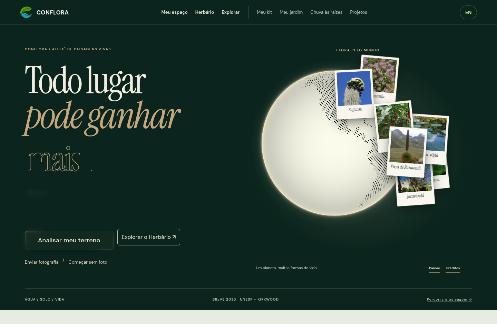
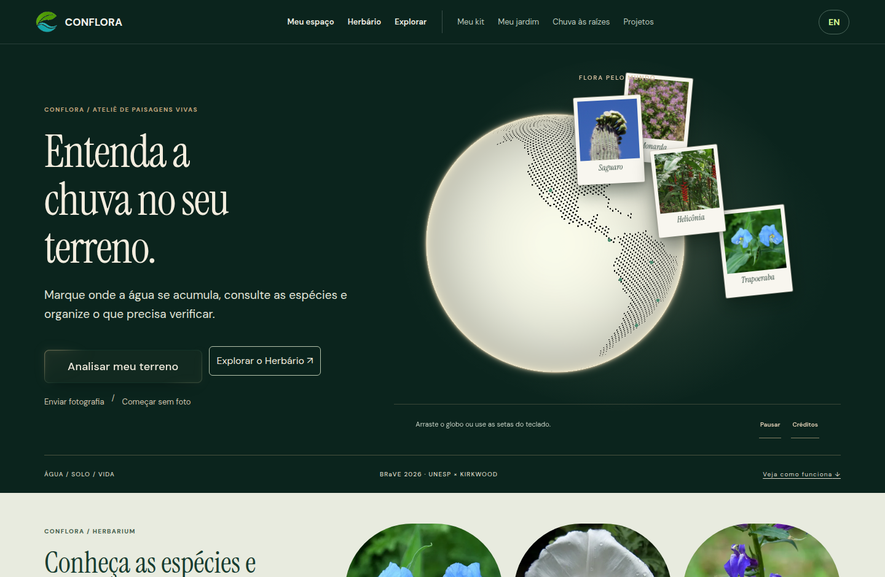
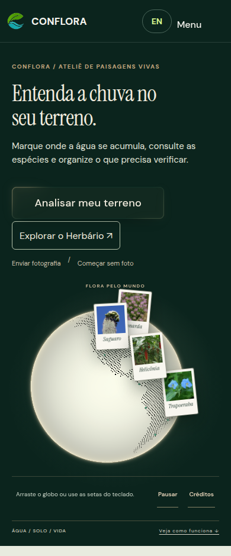
Gravação real no Chromium. A duração do arquivo inclui o carregamento e a abertura depois da apresentação.
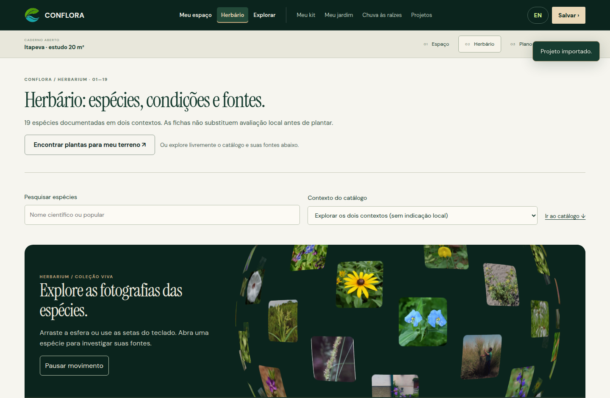
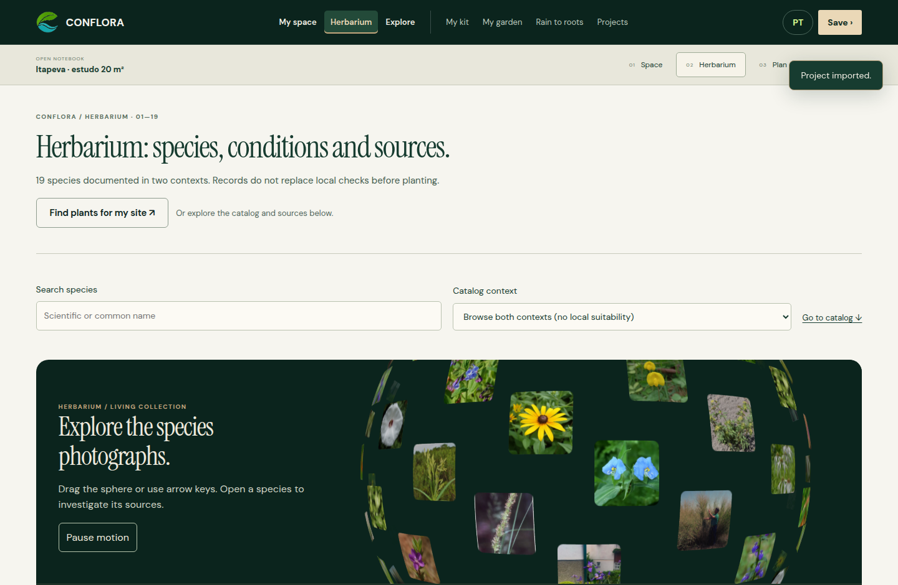
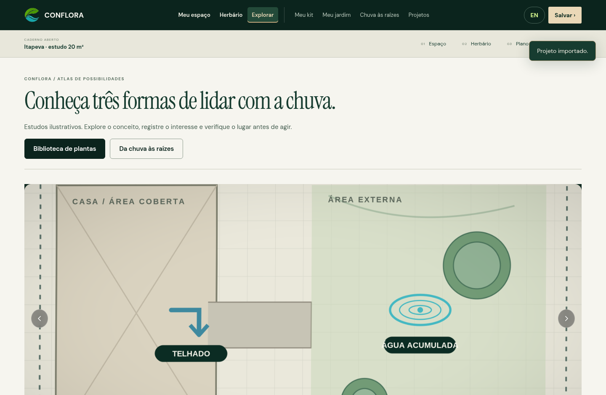
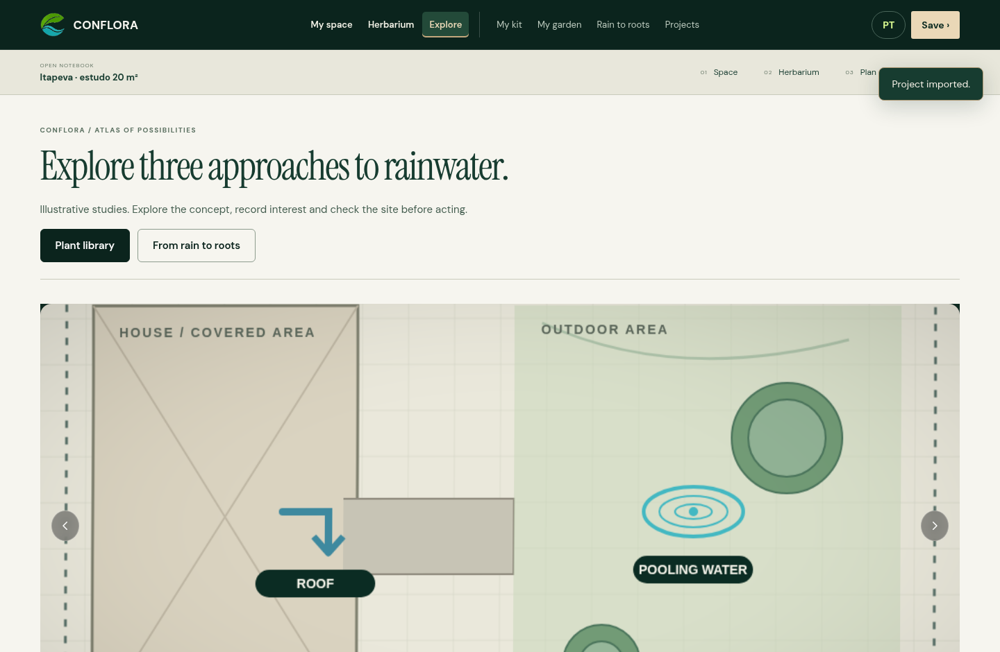
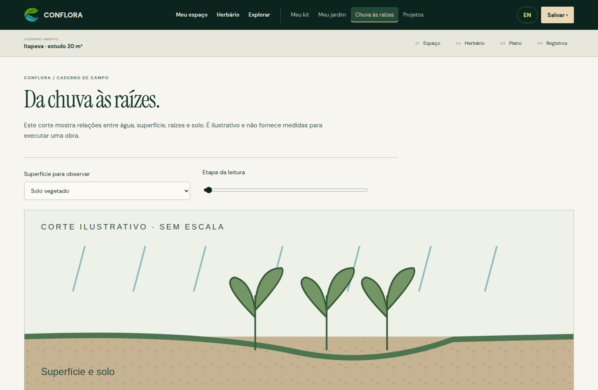
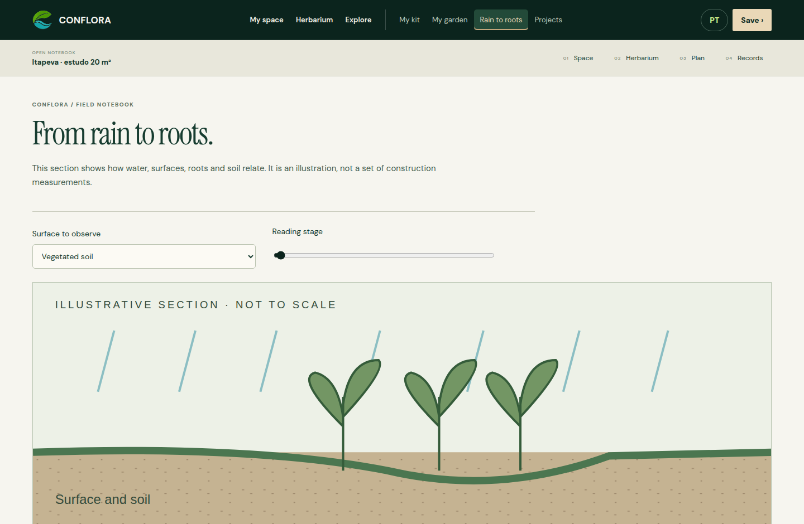
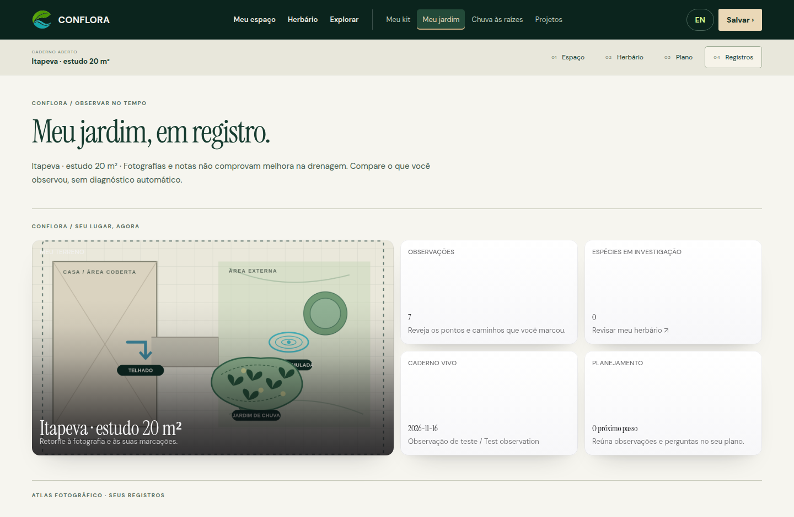
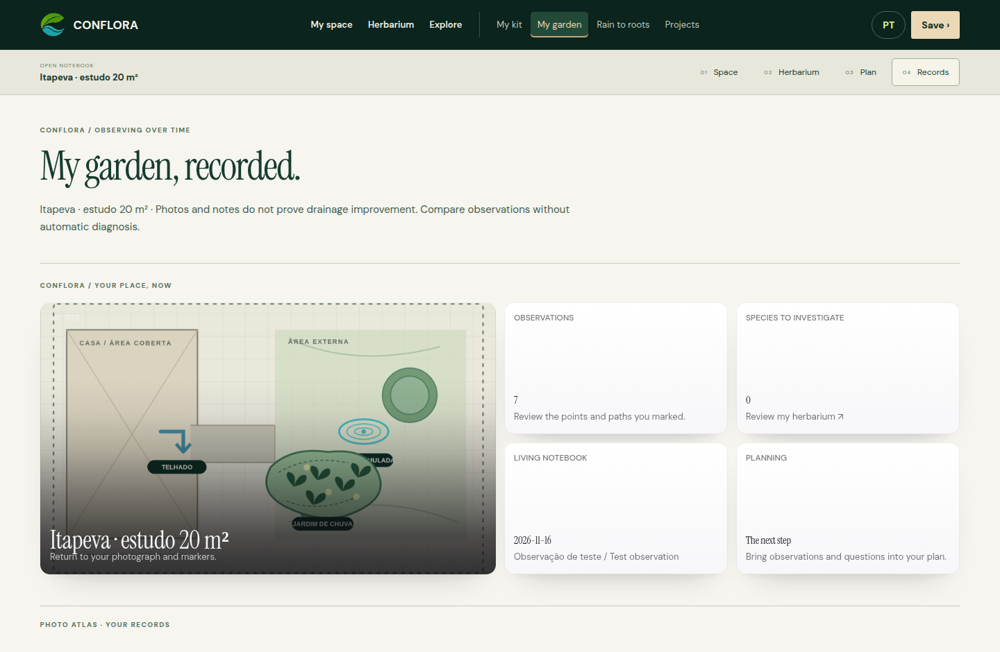
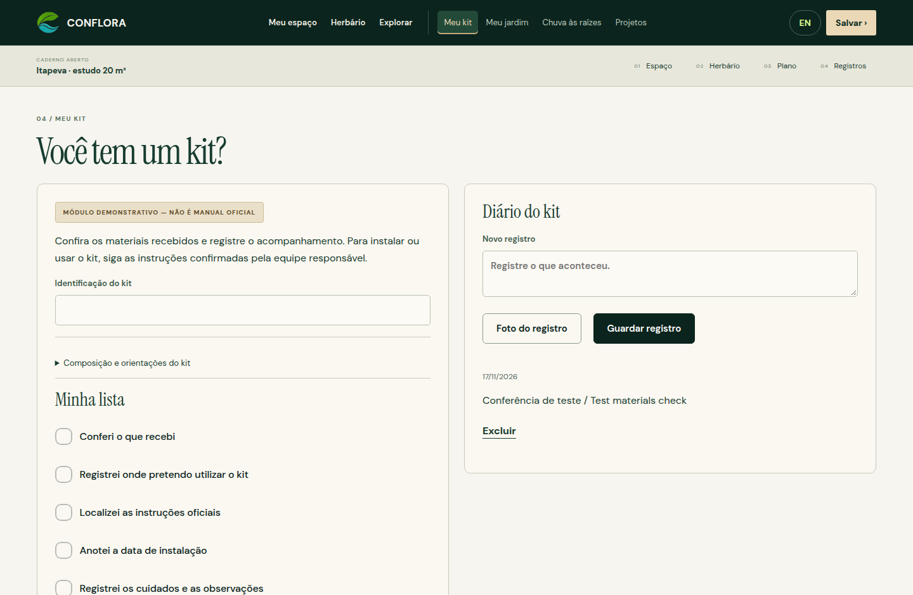
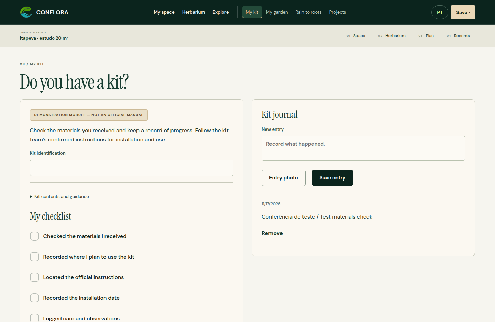
Capturas adicionais: Editor, Resultados a 390 px, Menu móvel. Testes automatizados e Lighthouse não equivalem a homologação em todos os dispositivos ou certificação de acessibilidade.